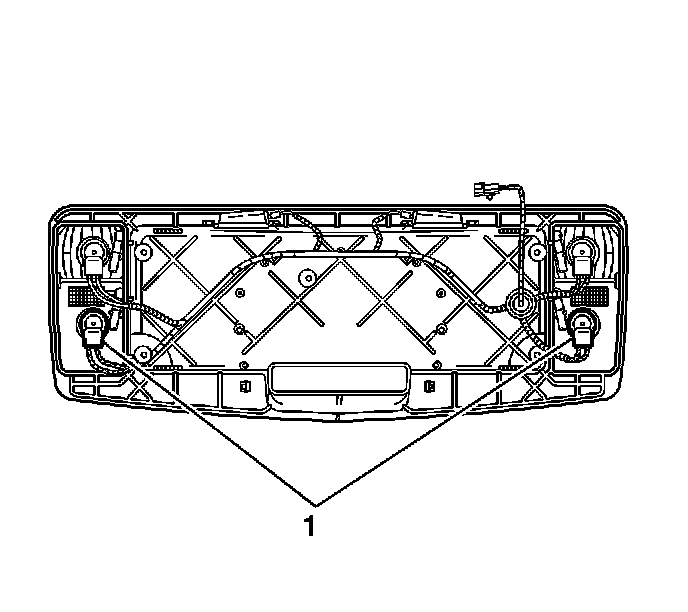

Rear Fog Lamp Bulb Replacement
Rear Fog Lamp Bulb Replacement
Removal Procedure
Caution: Refer to Halogen Bulb Caution .
1. Remove the lift gate applique. Refer to Liftgate Applique Replacement () .

2. Remove the fog lamp bulb socket (1) from the applique assembly by turning the socket counterclockwise and pulling the socket out.
3. Remove the fog lamp bulb from the socket.
Installation Procedure
Caution: Refer to Halogen Bulb Caution .
1. Install the fog lamp bulb into the socket.
2. Install the fog lamp bulb socket (1) into the applique assembly by inserting and twisting the socket clockwise.
3. Connect the electrical connector.
4. Install the lift gate applique. Refer to Liftgate Applique Replacement () .